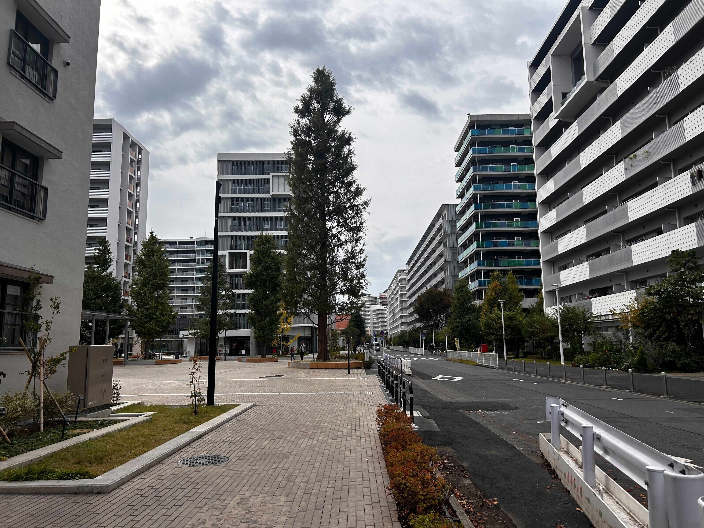
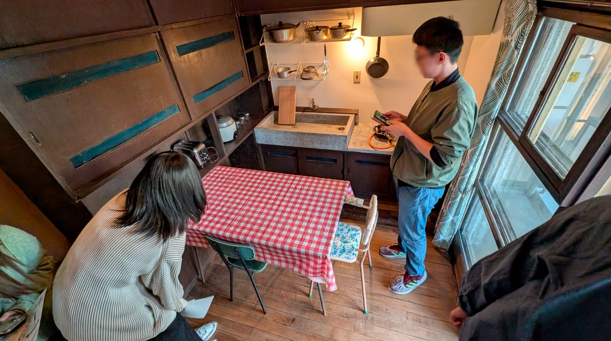
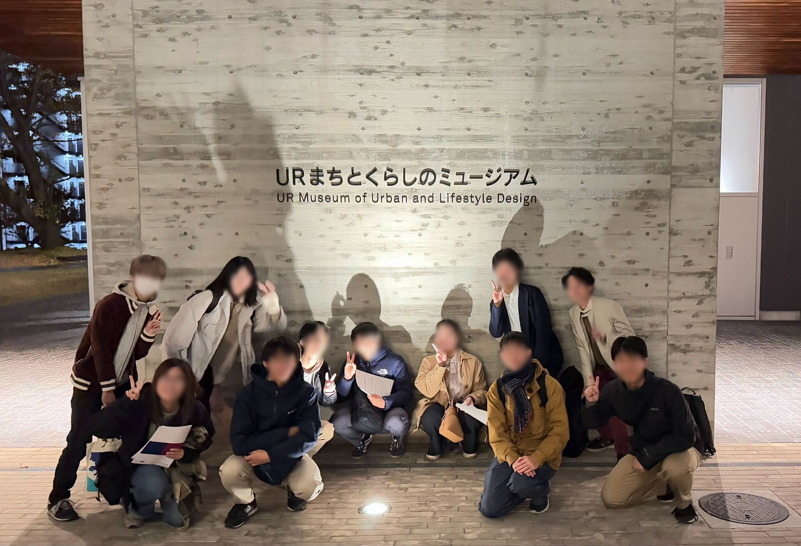

FEATURES
特集
「URまちとくらしのミュージアム」を見学しました
2024/11/29
2024年11月29日、東京都北区にてURまちとくらしのミュージアムを見学しました。 URまちとくらしのミュージアムは「ヌーヴェル赤羽台」（旧：赤羽台団地）の一区画の中に位置しており、道中ではURによって再生された新しい団地の数々を間近で見ることができました。
新しく生まれ変わった「ヌーヴェル赤羽台」
ミュージアムでは、UR都市機構およびその前身である日本住宅公団が手がけてきた団地の住戸の復元模型や、実際に住宅に使われていた部品などを見学しました。 展示を通して、集合住宅の設計の変遷を実際に見て学ぶことができました。また、住宅公団やURが戦後の住宅不足の解消に向けて行ってきた取り組みについても学ぶことができました。
蓮根団地の復元模型
さらに、今回の巡検では特別にUR都市機構の担当者様にお越しいただき、URの事業についてご説明をいただきました。 賃貸住宅事業のほかにも、都市再生事業や災害復興支援などの事業についても理解を深めることができました。
